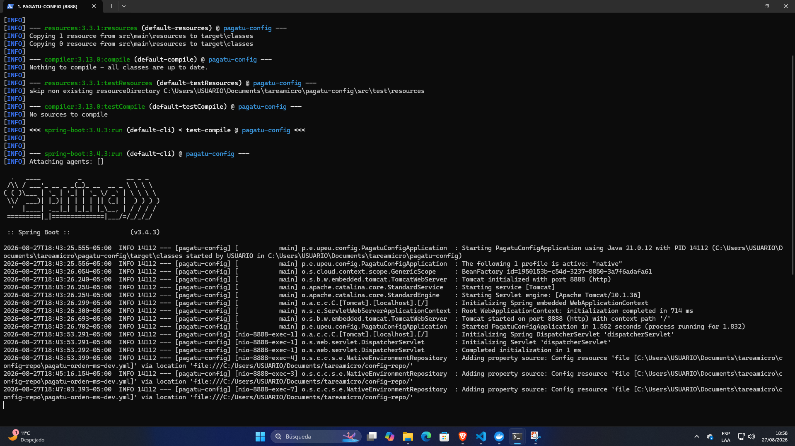
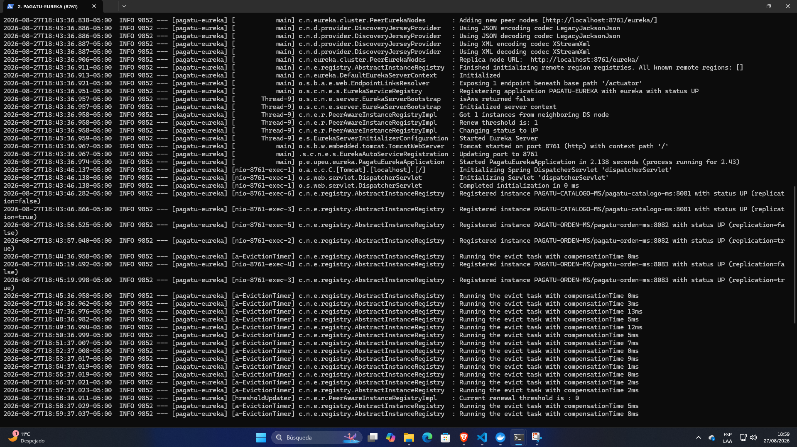
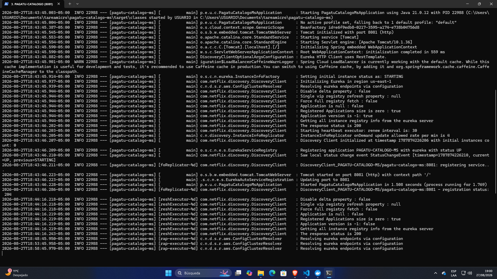
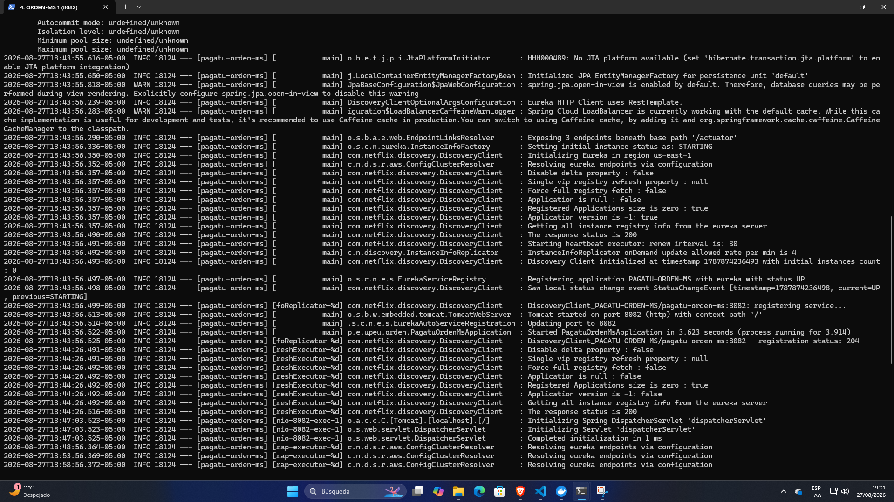
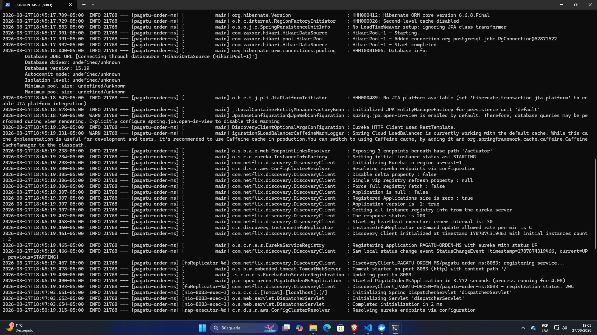
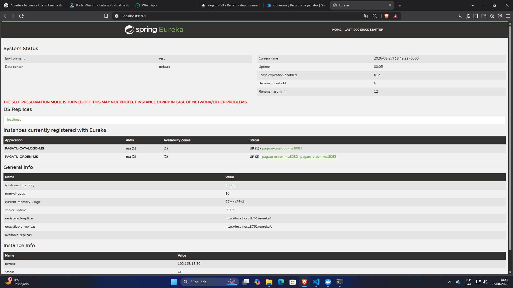
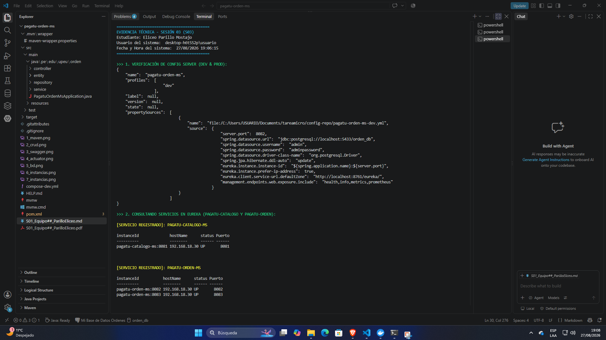

INFORME DE ACTIVIDAD AUTÓNOMA: SESIÓN 03
Registro, Descubrimiento y Ejecución Concurrente de Servicios
Estudiante: Eliceo Parillo Mostajo
Equipo: Equipo 01
Sesión: S03 - Registro, Descubrimiento y Ejecución Concurrente de Servicios
Rol o aporte realizado: Migración de pagatu-orden-ms a Config Client y Eureka Client, configuración centralizada en config-repo, despliegue simultáneo de dos instancias en paralelo y verificación del descubrimiento de servicios y persistencia compartida.
Link de GitHub: https://github.com/eliceoparillo/pagatu-orden-ms
1. Evidencia Técnica
1.1 Config Server Operativo (pagatu-config)

Figura 1: Servidor pagatu-config (puerto 8888) en perfil native aprovisionando configuraciones centralizadas desde config-repo.
1.2 Eureka Server Operativo (pagatu-eureka)

Figura 2: Servidor pagatu-eureka (puerto 8761) recibiendo registros y heartbeats de los microservicios.
1.3 pagatu-catalogo-ms Registrado en Eureka

Figura 3: Microservicio pagatu-catalogo-ms activo en el puerto 8081 y anunciado en Eureka con estado 204 UP.
1.4 pagatu-orden-ms - Primera Instancia (Puerto 8082)

Figura 4: Instancia 1 de pagatu-orden-ms iniciada en puerto 8082 y registrada como pagatu-orden-ms:8082.
1.5 pagatu-orden-ms - Segunda Instancia (Puerto 8083)

Figura 5: Instancia 2 de pagatu-orden-ms iniciada en puerto 8083 y registrada como pagatu-orden-ms:8083.
1.6 Dashboard Web de Eureka (http://localhost:8761)

Figura 6: Dashboard web de Eureka evidenciando PAGATU-CATALOGO-MS (1 instancia) y PAGATU-ORDEN-MS (2 instancias) en estado UP.
1.7 Verificación Integral por PowerShell (Config + Eureka + CRUD)

Figura 7: Salida de PowerShell con usuario, fecha/hora, verificación JSON de Config Server, catálogo Eureka y CRUD concurrente exitoso.
2. Comprensión del Patrón (Service Registry)
¿Por qué un componente que consulta el registro ya no necesita una lista de direcciones escrita a mano para encontrar ninguna de las dos instancias de pagatu-orden-ms, aunque ambos puertos sean fijos y elegidos a mano?
El patrón
Service Registry (Eureka) introduce una capa de abstracción basada en identificadores lógicos (
spring.application.name):
- Abstracción por Nombre Lógico: Los componentes clientes (como un API Gateway o servicios mediante OpenFeign) no se comunican directamente con
localhost:8082 ni localhost:8083. En su lugar, solicitan al registro: "Dame las instancias disponibles de PAGATU-ORDEN-MS".
- Autorregistro Dinámico: Cada instancia al iniciar publica automáticamente sus metadatos (IP, puerto y estado de salud). Eureka mantiene actualizado el catálogo mediante heartbeats periódicos.
- Descubrimiento y Balanceo en Memoria: El componente que consulta el registro descarga la lista de nodos y aplica un balanceador de carga del lado del cliente (Spring Cloud LoadBalancer con Round Robin) para distribuir las peticiones entre el puerto 8082 y 8083.
- Desacoplamiento Total: Aunque los puertos sean fijos y elegidos a mano, el cliente nunca los tiene codificados (hardcoded). Si se agregan más puertos o se cambian los servidores, el sistema continúa funcionando sin necesidad de modificar ni una sola línea de código o configuración en los servicios consumidores.
3. Error o Hallazgo Diagnosticado
- Descripción del Problema: Al compilar y arrancar
pagatu-orden-ms, se presentó el error Failed to configure a DataSource: 'url' attribute is not specified y la aplicación fallaba al iniciar. Además, en los archivos Java figuraba el error illegal character: '\ufeff'.
- Causa Raíz:
1. Los archivos fuente tenían caracteres de marca de orden de bytes (UTF-8 with BOM) agregados por el editor de texto.
2. En el archivo pom.xml faltaban las dependencias de spring-cloud-starter-config y spring-cloud-starter-netflix-eureka-client, lo que impedía que Spring Boot procesara la directiva spring.config.import para descargar la configuración de PostgreSQL desde el Config Server.
- Solución Implementada: Se ejecutó un script en PowerShell para limpiar el carácter BOM (
\ufeff) de los archivos .java. Luego, se actualizaron las dependencias en pom.xml integrando el BOM spring-cloud-dependencies (versión 2024.0.0) y las librerías de Config y Eureka Client, permitiendo que pagatu-orden-ms inicie correctamente conectado a su configuración remota.
4. Reflexión Técnica Breve
¿Por qué el registro y descubrimiento de servicios es un prerrequisito para el Gateway y el balanceo de carga que se construyen en S4?
"El registro y descubrimiento de servicios es un prerrequisito indispensable porque el API Gateway no debe estar acoplado a direcciones IP ni a puertos estáticos de la infraestructura. En una arquitectura de microservicios, las instancias son efímeras y escalan horizontalmente según la demanda de tráfico. Eureka provee la tabla de enrutamiento viva y centralizada que el Gateway consulta en tiempo real para resolver rutas dinámicas. Sin el Service Registry, sería imposible balancear la carga automáticamente (Round Robin) o redirigir el tráfico ante la caída de un nodo sin tener que reescribir y reiniciar manualmente la configuración del Gateway."
5. Preguntas de Defensa
- ¿Por qué
pagatu-eureka no se registra a sí mismo (register-with-eureka: false)?
Porque opera como un servidor de registro central standalone. Si intentara registrarse a sí mismo, emitiría peticiones fallidas continuas buscando réplicas de clúster inexistentes, generando sobrecarga innecesaria en los logs.
- ¿Qué pasaría si intentaras levantar la segunda instancia de
pagatu-orden-ms sin el override --server.port=8083?
Se produciría una excepción java.net.BindException: Address already in use (PortAlreadyInUseException), dado que dos procesos no pueden escuchar en el mismo socket TCP (8082).
- ¿Cómo verificaste que
pagatu-orden-ms quedó correctamente registrado, y no solo que el proceso arrancó?
Consultando la API REST de Eureka (/eureka/apps) y el Dashboard web, corroborando que ambas instancias aparecen con estado UP y con sus instanceId diferenciados.
- ¿Qué le pasa a una instancia en el dashboard de Eureka si dejas de enviarle heartbeat (Ctrl+C)?
Eureka deja de recibir los latidos de renovación (cada 30s). Al expirar el tiempo de arrendamiento (lease expiration de 90s), el servidor elimina la instancia de su catálogo para evitar redirigir tráfico a un servicio caído.
- ¿Por qué el nombre lógico (
spring.application.name) es el mismo dato que ya usa pagatu-config desde S2?
Porque actúa como la clave primaria canónica en el ecosistema Spring Cloud: Config Server lo usa para asociar el archivo YAML en el repositorio (pagatu-orden-ms-dev.yml) y Eureka lo emplea como el Service ID (VIPAddress) para el descubrimiento.
Anexo: Feedback de la Sesión
- ¿Cuál es el aprendizaje más importante que te llevas de la clase de hoy?
Comprender cómo el Service Registry (Eureka) permite que los microservicios se descubran dinámicamente usando únicamente su nombre lógico, abstrayendo por completo los puertos e IPs físicas.
- ¿Qué punto de la clase te resultó más confuso o te dejó con dudas?
El funcionamiento del Self-Preservation Mode de Eureka y cómo se configuran los umbrales de expiración del heartbeat en entornos distribuidos.
- ¿Tienes alguna pregunta que te gustaría que sea respondida la siguiente clase?
¿Cómo gestiona Spring Cloud Gateway la distribución del tráfico cuando una instancia registrada en Eureka comienza a responder con errores HTTP 500 pero sigue enviando heartbeats como UP?
- Sobre tu nivel de comprensión de la clase de hoy: [X] ¡Entendido! - Lo domino y podría explicarlo.
- ¿Cómo puedo ayudarte a comprender mejor el tema?
Incluyendo diagramas de secuencia visuales sobre el ciclo de vida del heartbeat y la resolución de rutas en el Gateway.
- Pensando en tu participación y esfuerzo: [X] Muy Comprometido/a: Me esforcé al máximo.
- Mi satisfacción con la clase fue: 10 / 10